About
「Media Design Works 2015」とは、東京造形大学芸術祭「Creative Spiral Festival」にて開催されるメディアデザイン専攻領域の作品展示会です。
今年も、メディアデザイン専攻領域の学生が制作した多数の作品が集まります。
他専攻の展示にはない、実際に触れて体験できる作品を中心に様々なジャンルの作品を展示します。ぜひご来場ください。
Media Design Works 2015 一同
Works
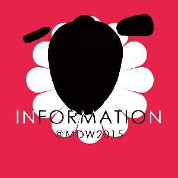
- INFORMATION
- 木下さくら
- 「ようこそゲストさん。ワタシはMDW2015インフォメーションセンター受付ロボのICHIGOです。アナタの"この作品気になる！"をタブレット端末の中からサポートいたします♪」
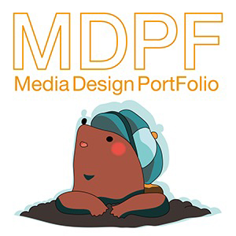
- メディアデザインポートフォリオサイト
- MDPF
- 「メディアデザインってどんなところ？」という疑問に答えるべく、メディアデザインの学生有志が専攻のようすを発信していくサイト。学生の作品や授業内容を紹介するほか、メンバー自身がさまざまな企画を立ち上げ、活動している。
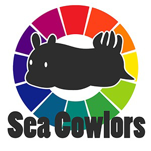
- Sea Cowlors
- 清水友里
- 海の宝石と呼ばれる軟体動物、ウミウシをテーマとしたカラーパターンを共有するWeb配色ツールです。自然の生み出した美しい配色を揃えています。あなたのお気に入りのウミウシを見つけて、デザインに活用しましょう。
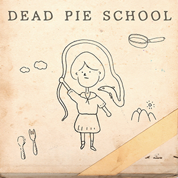
- Dead Pie School
- 渡邊まな実 名波伊智子
- とある大学祭の展示教室を訪れた少女は、そこで奇妙な生物と遭遇する―――。少女を導き、逃げ切り、奇妙な生き物の謎を暴いてください。
ホラーアドベンチャーゲーム。おいしいクリア特典、あります。
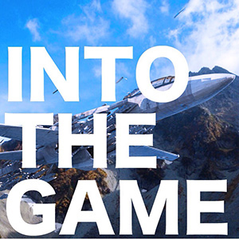
- INTO THE GAME
- Garbage Men
- ３年生複数人による合同制作作品です。ミニゲームをクリアしながらストーリーを進めていく映像作品です。昨年はFlashでゲームを作成しましたが、今年はUnityを使用しています。
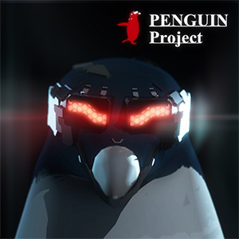
- PENGUIN Project
- ワダプロ
- ｢Unity｣を使用して制作したサバイバルシューティングゲーム。内容は、ペンギンを操作して迫りくるシークインから逃げる内容となっております。シークインを逃げつつ倒しながら、施設を脱出していくのがこのゲームの目標になっています。
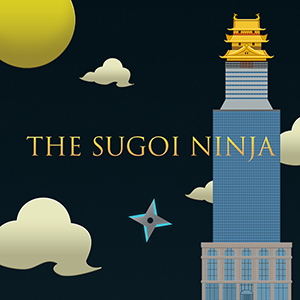
- THE SUGOI NINJA
- TEAM THE SUGOI NINJA
- THE SUGOI NINJA は、 SAMURAI を殺さずに驚異的な NINJA が敵の城を捕らえるゲームである。
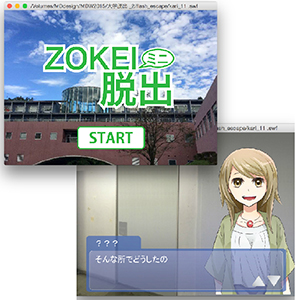
- ZOKEI ミニ脱出
- 徳永このみ
- ３分ほどで終わる、短かめの脱出ゲームです。東京造形大学の７号館４階が舞台となっております。大学の４階フロアに閉じ込められてしまった主人公が、大学の友人と脱出を目指します。Adobe Flashを利用して制作しました。
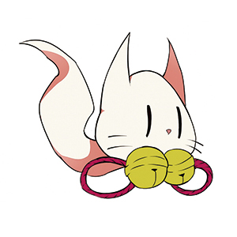
- マコト百人一首（仮）
- SeToLi
- 百人一首の世界に迷い込んだ少年-マコトの物語です。
少年を操り、敵を避け《飛び散った文字》を集めていきましょう。気軽に遊んでいただいてければ幸いです。2-203（A）教室にてより詳しい展示を行っております。こちらにもぜひお越し下さい。
- C-Walk（仮）
- 大沼 梓
- ヒトの動きに合わせて足元のアニメーションが動く、そんな仕組みの作品を作ってみたいと思って制作しました。見慣れた教室の床がいつしか色や模様が自由自在に変えられる時代が来たら、少し毎日が楽しくなるんじゃないかな。（仮）
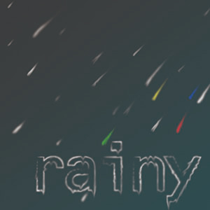
- rainy/dress
- 田中水沙希
- rainy：ある雨上がりの日、少年と少女が水溜まりから異世界にワープ…！！？ 3枚のモニターを使用した手描きアニメーション作品。
dress：次から次へと早着替え！モニターからモニターへ移動しながらキャラクターが衣装チェンジしていきます。
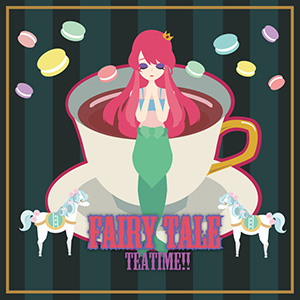
- 水×GARLY
- ニナガーリー班
- 「可愛い、ガーリー」をテーマにした映像が、覗き込んだティーカップの水面に浮かび上がります。モニターには彩られたカップの中身が、本物のカップにはモノクロの映像が。魔法のカケラを落として、カップの中身に色をつけて見ませんか？
- あなたは何を選ぶ？どきどきフードペアリング
- 桑原琴美
- 自分の好きな食材を選んでウェブカメラにかざすと、選んだ食材を用いたレシピが表示されます。ARを用いてお客さんに楽しみながら買い物をしてもらうことを目的としています。
Photo
開催日より会場のようすを随時掲載していきます。
Info
開催期間
10月16日(金) 12:00~20:00
10月17日(土)・18日(日) 10:00~20:00
会場
東京造形大学 7号館4階 7-406教室
アクセス
JR横浜線 相原駅よりスクールバスが運行されます。スクールバスの時刻表など、詳しくはCS祭公式サイトをご覧ください。